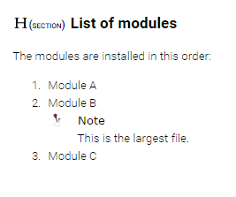

Numbered lists are used to indicate a sequence or priority of items.
Numbered lists can be useful to indicate the steps in a task or priority, sequence,
or order of items in any the topic types.
-
In a topic, put your cursor on an empty line or on the line with your first
item.
-
From the toolbar, select Insert/Remove Numbered List.
-
Add your items.
-
Press Enter to create the next list item.
-
To add more complex content to a list item like a second paragraph or a note,
create a new list item and press Backspace.
You now have a new paragraph that is part of the list item above.
Tip: You can press Enter to bring the bullet back if you
removed it by accident.
-
Create sub-list items (a second level) by using the indent button or pressing
tab.
Attention: If you are creating a step in a task topic, and you want to add a second paragraph to your instruction, you will need to make sure to remove the Step Result part from the guidance panel first. It can be added again after the second paragraph or substeps have been added
-
To end the list, press Enter on the last, empty list item.
Figure 1. Numbered list with a note
